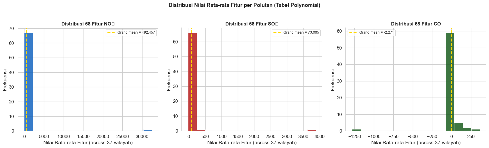
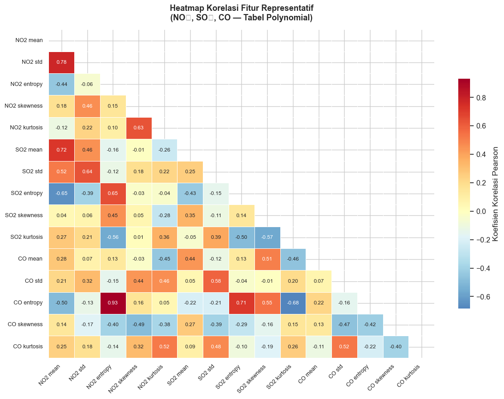
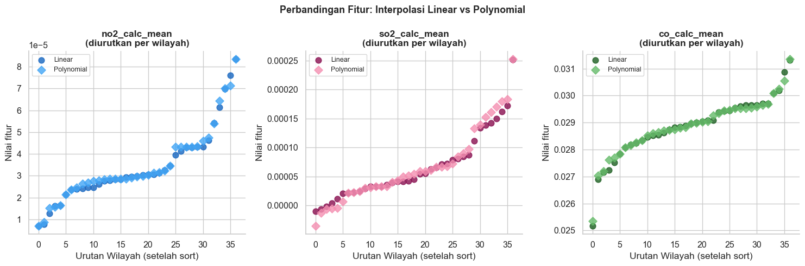

Tahap 1 — Pengambilan Data & Exploratory Data Analysis (EDA)#
Pada tahap pertama ini kita akan:
Menghubungkan Python ke database MySQL
Memuat kedua tabel fitur (linear & polynomial)
Mengeksplorasi struktur dan distribusi data
Menyimpan data hasil preprocessing untuk tahap berikutnya
Latar Belakang#
Sebelum membangun model clustering, kita perlu benar-benar memahami data yang akan digunakan. EDA (Exploratory Data Analysis) adalah proses investigasi awal untuk:
Mendeteksi missing values yang bisa merusak perhitungan jarak di K-Means
Memahami distribusi nilai tiap fitur (normal, skewed, atau ada outlier)
Mengidentifikasi korelasi antar fitur (fitur yang sangat berkorelasi membawa informasi redundan)
Mengenal karakteristik wilayah dalam dataset
Data bersumber dari dua tabel database MySQL:
ekstraksi_fitur_linear— fitur dari interpolasi linear time-seriesekstraksi_fitur_polynomial— fitur dari interpolasi polinomial time-series
Masing-masing tabel: 207 kolom (id, nama, daerah + 204 fitur) × 37 baris (37 wilayah).
1.1 Import Library & Konfigurasi#
import warnings
warnings.filterwarnings('ignore')
import os
import pickle
import numpy as np
import pandas as pd
import matplotlib.pyplot as plt
import seaborn as sns
# Folder output bersama (sejajar dengan folder 01_, 02_, 03_, 04_)
# Struktur: Clustering_Segmentasi/output <- notebook ini ada di Clustering_Segmentasi/01_.../
OUTPUT_DIR = '../output'
os.makedirs(OUTPUT_DIR, exist_ok=True) # tidak membuat folder baru jika sudah ada
plt.rcParams['figure.figsize'] = (13, 5)
sns.set_theme(style='whitegrid', palette='muted', font_scale=1.05)
print('Library berhasil diimpor.')
print(f'Output akan disimpan di: {os.path.abspath(OUTPUT_DIR)}')
Library berhasil diimpor.
Output akan disimpan di: C:\Users\OKAN\OneDrive\Dokumen\PSD\materi\Clustering_Segmentasi\output
1.2 Koneksi dan Pengambilan Data#
Urutan sumber data (otomatis):
Database MySQL (sumber utama)
File CSV lokal di folder notebook atau folder
output(cadangan), yaituekstraksi_fitur_linear.csvdanekstraksi_fitur_polynomial.csv
Setiap sumber divalidasi: data harus berisi angka. Jika isi tabel ternyata hanya teks nama kolom (header ikut ter-import sebagai data), sumber itu dilewati dan notebook mencoba sumber berikutnya.
# ── Konfigurasi ──────────────────────────────────────────────
DB_CONFIG = {
'host' : 'basisdata2-c.my.id',
'port' : 3306,
'database': 'basisda1_PSD-A-Interpolasi',
'user' : 'basisda1_PSD-User',
'password': 'PSD-A#2026',
'charset' : 'utf8mb4',
'connect_timeout': 15,
}
TABEL_LINEAR = 'ekstraksi_fitur_linear'
TABEL_POLY = 'ekstraksi_fitur_polynomial'
CSV_LINEAR = 'ekstraksi_fitur_linear.csv'
CSV_POLY = 'ekstraksi_fitur_polynomial.csv'
CSV_DIRS = ['.', OUTPUT_DIR] # folder tempat mencari file CSV cadangan
META_COLS = ['id', 'nama', 'daerah'] # kolom non-fitur
# ── Fungsi bantu ─────────────────────────────────────────────
def ke_numerik(df):
"""Ubah semua kolom fitur ke angka (mendukung desimal koma). Non-angka -> NaN."""
feat_cols = [c for c in df.columns if c not in META_COLS]
X = df[feat_cols].copy()
for c in feat_cols:
if X[c].dtype == object or str(X[c].dtype).startswith('str'):
X[c] = X[c].astype(str).str.strip().str.replace(',', '.', regex=False)
X[c] = pd.to_numeric(X[c], errors='coerce')
return X
def data_valid(df):
"""True jika tabel punya minimal 2 baris yang berisi angka pada kolom fitur."""
if df is None or df.shape[0] == 0:
return False
X = ke_numerik(df)
if X.shape[1] == 0:
return False
baris_ok = X.notna().mean(axis=1) > 0.5
return int(baris_ok.sum()) >= 2
def ambil_dari_db(tabel):
import pymysql
conn = pymysql.connect(**DB_CONFIG)
try:
with conn.cursor() as cur:
cur.execute(f'SELECT * FROM `{tabel}`')
kolom = [d[0] for d in cur.description]
baris = cur.fetchall()
finally:
conn.close()
return pd.DataFrame(list(baris), columns=kolom)
def ambil_data(tabel, csv_path):
# 1) Database
try:
df = ambil_dari_db(tabel)
print(f'[DB ] "{tabel}" -> {df.shape[0]} baris x {df.shape[1]} kolom')
if data_valid(df):
return df, 'database'
print(f' [!] Isi tabel "{tabel}" BUKAN angka (kemungkinan header ikut ter-import sebagai data).')
except Exception as e:
print(f'[DB ] gagal terhubung/membaca "{tabel}": {type(e).__name__}: {e}')
# 2) CSV lokal (folder notebook atau folder output)
ketemu = [os.path.join(dr, csv_path) for dr in CSV_DIRS if os.path.exists(os.path.join(dr, csv_path))]
csv_path = ketemu[0] if ketemu else csv_path
if ketemu:
df = pd.read_csv(csv_path)
print(f'[CSV] "{csv_path}" -> {df.shape[0]} baris x {df.shape[1]} kolom')
if data_valid(df):
return df, 'csv'
print(f' [!] Isi "{csv_path}" juga bukan angka.')
else:
print(f'[CSV] "{csv_path}" tidak ditemukan.')
raise RuntimeError(
f'Tidak ada sumber data valid untuk "{tabel}".\n'
f' -> Perbaiki isi tabel di database (isi ulang data fitur 37 wilayah x 204 fitur), ATAU\n'
f' -> letakkan file "{csv_path}" di folder notebook ini atau di folder output.'
)
# ── Muat kedua tabel ─────────────────────────────────────────
print('Memuat data...\n')
df_linear, src_linear = ambil_data(TABEL_LINEAR, CSV_LINEAR)
df_poly, src_poly = ambil_data(TABEL_POLY, CSV_POLY)
print(f'\nSelesai. Sumber -> linear: {src_linear}, polynomial: {src_poly}')
Memuat data...
[DB ] gagal terhubung/membaca "ekstraksi_fitur_linear": ModuleNotFoundError: No module named 'pymysql'
[CSV] "ekstraksi_fitur_linear.csv" tidak ditemukan.
---------------------------------------------------------------------------
RuntimeError Traceback (most recent call last)
Cell In[2], line 90
88 # ── Muat kedua tabel ─────────────────────────────────────────
89 print('Memuat data...\n')
---> 90 df_linear, src_linear = ambil_data(TABEL_LINEAR, CSV_LINEAR)
91 df_poly, src_poly = ambil_data(TABEL_POLY, CSV_POLY)
92 print(f'\nSelesai. Sumber -> linear: {src_linear}, polynomial: {src_poly}')
Cell In[2], line 81, in ambil_data(tabel, csv_path)
78 else:
79 print(f'[CSV] "{csv_path}" tidak ditemukan.')
---> 81 raise RuntimeError(
82 f'Tidak ada sumber data valid untuk "{tabel}".\n'
83 f' -> Perbaiki isi tabel di database (isi ulang data fitur 37 wilayah x 204 fitur), ATAU\n'
84 f' -> letakkan file "{csv_path}" di folder notebook ini atau di folder output.'
85 )
RuntimeError: Tidak ada sumber data valid untuk "ekstraksi_fitur_linear".
-> Perbaiki isi tabel di database (isi ulang data fitur 37 wilayah x 204 fitur), ATAU
-> letakkan file "ekstraksi_fitur_linear.csv" di folder notebook ini atau di folder output.
1.3 Pemisahan Metadata dan Fitur Numerik#
Tiga kolom pertama (id, nama, daerah) adalah identitas, bukan fitur numerik. Kita pisahkan agar tidak ikut dalam perhitungan clustering. Baris yang bukan angka (misalnya header duplikat) dibuang otomatis.
def bersihkan_df(df, nama=''):
X = ke_numerik(df)
valid = (X.notna().mean(axis=1) > 0.5).values # baris yang benar-benar berisi angka
if (~valid).any():
print(f' [!] {nama}: {(~valid).sum()} baris non-numerik dibuang.')
X = X.loc[valid].reset_index(drop=True)
meta_cols = [c for c in META_COLS if c in df.columns]
meta = df.loc[valid, meta_cols].reset_index(drop=True)
# kolom fitur yang seluruhnya kosong tidak berguna
kosong = X.columns[X.isna().all()]
if len(kosong):
print(f' [!] {nama}: {len(kosong)} kolom kosong dibuang.')
X = X.drop(columns=kosong)
return meta, X
meta_linear, X_linear = bersihkan_df(df_linear, 'linear')
meta_poly, X_poly = bersihkan_df(df_poly, 'polynomial')
print('Bentuk data fitur:')
print(f' Linear : {X_linear.shape} ({X_linear.shape[0]} wilayah x {X_linear.shape[1]} fitur)')
print(f' Poly : {X_poly.shape} ({X_poly.shape[0]} wilayah x {X_poly.shape[1]} fitur)')
print(f'\n{len(meta_poly)} Wilayah dalam dataset:')
nama_col = 'daerah' if 'daerah' in meta_poly.columns else meta_poly.columns[0]
for i, nm in enumerate(meta_poly[nama_col], 1):
print(f' {i:2d}. {nm}')
Bentuk data fitur:
Linear : (37, 204) (37 wilayah x 204 fitur)
Poly : (37, 204) (37 wilayah x 204 fitur)
37 Wilayah dalam dataset:
1. Baron Nganjuk
2. Nunukan
3. Sreseh, Sampang
4. Manyar, Gresik
5. Kamal, Bangkalan
6. Kedungpring Lamongan
7. Gresik Kota, Gresik
8. Waru, Pamekasan
9. Paciran, Lamongan
10. Kertosono, Nganjuk
11. Jabon, Sidoarjo
12. Menganti, Gresik
13. Bandung - Jogoroto, Jombang
14. Banyu Ajuh, Perumnas, Kamal
15. Widang, Tuban
16. Kwanyar, Bangkalan
17. sambeng, lamongan
18. Kec. Kalianget, Sumenep
19. Cerme, Gresik
20. Tikala, Manado
21. Kerek, Tuban
22. Kwanyar, Bangkalan
23. Wonokromo, Surabaya
24. Asemrowo, Surabaya
25. Kota Sumenep, Sumenep
26. Socah, Bangkalan
27. Pilangkenceng, Madiun
28. Tanah Merah, Bangkalan
29. Sidoarjo, Wonoayu
30. Labang, Bangkalan
31. Widodaren, Ngawi
32. Bangkalan, Bangkalan
33. Warudoyong, Kota Sukabumi
34. Kamal, Bangkalan
35. Banyuajuh kamal, Bangkalan
36. Dukun, Gresik
37. Kecamatan Bangkalan,Bangkalan
1.4 Penanganan Missing Values#
K-Means tidak bisa menghitung jarak Euclidean jika ada nilai NaN. Strategi:
Jumlah
NaNsedikit: isi dengan median kolom (robust terhadap outlier)Fitur dengan > 50%
NaN: dibuang
def tangani_nan(X, nama):
n_nan = int(X.isnull().sum().sum())
print(f' {nama:<7}: {n_nan} nilai kosong dari {X.size} total')
# buang fitur dengan > 50% NaN
banyak = X.columns[X.isnull().mean() > 0.5]
if len(banyak):
print(f' {len(banyak)} fitur dengan >50% NaN dibuang.')
X = X.drop(columns=banyak)
if X.isnull().values.any():
X = X.fillna(X.median())
# jika masih ada NaN (kolom kosong total), isi 0
X = X.fillna(0)
print(f' NaN diisi dengan median.')
return X
print('Status Missing Values:')
X_linear = tangani_nan(X_linear, 'Linear')
X_poly = tangani_nan(X_poly, 'Poly')
print('\nData bersih, siap dianalisis.')
Status Missing Values:
Linear : 0 nilai kosong dari 7548 total
Poly : 0 nilai kosong dari 7548 total
Data bersih, siap dianalisis.
1.5 Statistik Deskriptif#
Statistik deskriptif memberikan gambaran cepat tentang karakteristik numerik setiap fitur.
print('=== Statistik Deskriptif — Fitur Polynomial (15 Pertama) ===')
desc = X_poly.describe().T[['mean', 'std', 'min', '50%', 'max']]
desc.columns = ['Mean', 'Std Dev', 'Min', 'Median', 'Max']
# Coefficient of Variation (CV) = Std / |Mean|
desc['CV (%)'] = (desc['Std Dev'] / desc['Mean'].abs() * 100).replace([np.inf, -np.inf], np.nan).round(1)
print(desc.head(15).round(4).to_string())
print(f'\n... (total {X_poly.shape[1]} fitur)')
high_cv = int((desc['CV (%)'].abs() > 100).sum())
print(f'\nFitur dengan CV > 100% : {high_cv} ({high_cv/len(desc)*100:.1f}%)')
print('(Fitur CV tinggi = variasi antar wilayah besar = informatif untuk clustering)')
=== Statistik Deskriptif — Fitur Polynomial (15 Pertama) ===
Mean Std Dev Min Median Max CV (%)
no2_abs_energy 0.0000 0.0000 0.0000 0.0000 0.0000 120.5
no2_auc 0.0131 0.0081 0.0017 0.0108 0.0485 61.6
no2_autocorr 7.5135 9.3024 2.0000 5.0000 51.0000 123.8
no2_average_power 0.0000 0.0000 0.0000 0.0000 0.0000 101.8
no2_calc_centroid 180.5814 33.3954 113.2350 180.6604 325.2713 18.5
no2_calc_max 0.0001 0.0000 0.0000 0.0001 0.0002 58.5
no2_calc_mean 0.0000 0.0000 0.0000 0.0000 0.0001 48.8
no2_calc_median 0.0000 0.0000 0.0000 0.0000 0.0001 50.8
no2_calc_min -0.0000 0.0000 -0.0000 -0.0000 0.0000 353.9
no2_calc_std 0.0000 0.0000 0.0000 0.0000 0.0000 56.9
no2_calc_var 0.0000 0.0000 0.0000 0.0000 0.0000 123.9
no2_dfa 1.1050 0.2413 0.7221 1.0663 2.0854 21.8
no2_distance 363.6486 45.6205 240.0000 365.0000 581.0000 12.5
no2_ecdf 0.0153 0.0019 0.0095 0.0150 0.0228 12.6
no2_ecdf_percentile 0.0000 0.0000 0.0000 0.0000 0.0001 47.4
... (total 204 fitur)
Fitur dengan CV > 100% : 39 (19.1%)
(Fitur CV tinggi = variasi antar wilayah besar = informatif untuk clustering)
1.6 Visualisasi Distribusi Fitur per Polutan#
Setiap polutan (NO₂, SO₂, CO) memiliki sekitar 68 fitur. Histogram berikut menampilkan distribusi nilai rata-rata dari fitur-fitur tersebut.
polutans = [('no2', '#1565C0', 'NO₂'), ('so2', '#B71C1C', 'SO₂'), ('co', '#1B5E20', 'CO')]
n_wil = X_poly.shape[0]
fig, axes = plt.subplots(1, 3, figsize=(17, 5))
for ax, (prefix, color, label) in zip(axes, polutans):
cols = [c for c in X_poly.columns if c.startswith(prefix + '_')]
if not cols:
ax.set_title(f'{label}: tidak ada kolom "{prefix}_*"')
ax.axis('off')
continue
means = X_poly[cols].mean()
ax.hist(means, bins=15, color=color, alpha=0.85, edgecolor='white', linewidth=0.8)
ax.axvline(means.mean(), color='gold', linewidth=2, linestyle='--',
label=f'Grand mean = {means.mean():.3f}')
ax.set_title(f'Distribusi {len(cols)} Fitur {label}', fontweight='bold', fontsize=12)
ax.set_xlabel(f'Nilai Rata-rata Fitur (across {n_wil} wilayah)')
ax.set_ylabel('Frekuensi')
ax.legend(fontsize=9)
ax.spines[['top', 'right']].set_visible(False)
plt.suptitle('Distribusi Nilai Rata-rata Fitur per Polutan (Tabel Polynomial)',
fontsize=13, fontweight='bold', y=1.02)
plt.tight_layout()
plt.savefig(f'{OUTPUT_DIR}/01_distribusi_fitur.png', dpi=150, bbox_inches='tight')
plt.show()
print('Gambar disimpan: output/01_distribusi_fitur.png')

Gambar disimpan: output/01_distribusi_fitur.png
1.7 Heatmap Korelasi Antar Fitur#
Korelasi tinggi antar fitur menandakan redundansi informasi, yang menjadi justifikasi utama reduksi dimensi (PCA) pada tahap berikutnya.
Kita pilih 15 fitur representatif (5 per polutan). Jika nama fitur favorit tidak ada, otomatis diganti dengan fitur dengan variasi terbesar.
candidates = ['calc_mean', 'calc_std', 'entropy', 'skewness', 'kurtosis']
feats_viz = []
for prefix in ['no2', 'so2', 'co']:
pilih = [f'{prefix}_{c}' for c in candidates if f'{prefix}_{c}' in X_poly.columns]
if len(pilih) < 5: # lengkapi dengan fitur ber-variasi terbesar
sisa = [c for c in X_poly.columns if c.startswith(prefix + '_') and c not in pilih]
sisa = X_poly[sisa].std().sort_values(ascending=False).index.tolist()
pilih += sisa[:5 - len(pilih)]
feats_viz += pilih
# buang fitur konstan (std = 0) agar korelasi tidak NaN
feats_viz = [f for f in feats_viz if X_poly[f].std() > 0]
corr = X_poly[feats_viz].corr()
labels_short = [c.replace('no2_', 'NO2 ').replace('so2_', 'SO2 ')
.replace('co_', 'CO ').replace('calc_', '') for c in feats_viz]
fig, ax = plt.subplots(figsize=(12, 9))
mask = np.triu(np.ones_like(corr, dtype=bool))
sns.heatmap(
corr, mask=mask,
annot=True, fmt='.2f', cmap='RdYlBu_r', center=0,
linewidths=0.5, annot_kws={'size': 8.5},
xticklabels=labels_short, yticklabels=labels_short,
cbar_kws={'shrink': 0.7, 'label': 'Koefisien Korelasi Pearson'}
)
ax.set_title('Heatmap Korelasi Fitur Representatif\n(NO₂, SO₂, CO — Tabel Polynomial)',
fontsize=13, fontweight='bold', pad=15)
plt.xticks(rotation=45, ha='right', fontsize=9)
plt.yticks(fontsize=9)
plt.tight_layout()
plt.savefig(f'{OUTPUT_DIR}/02_heatmap_korelasi.png', dpi=150, bbox_inches='tight')
plt.show()
print('Gambar disimpan: output/02_heatmap_korelasi.png')

Gambar disimpan: output/02_heatmap_korelasi.png
Interpretasi:
Warna merah tua = korelasi positif kuat (+1), fitur bergerak searah
Warna biru tua = korelasi negatif kuat (−1), fitur bergerak berlawanan
Banyaknya sel berwarna gelap mengonfirmasi redundansi tinggi antar fitur dari polutan yang sama, sehingga PCA sangat dibutuhkan
1.8 Perbandingan Linear vs Polynomial#
Kita bandingkan distribusi fitur yang sama antara dua metode interpolasi.
compare_feats = ['no2_calc_mean', 'so2_calc_mean', 'co_calc_mean']
compare_feats = [f for f in compare_feats if f in X_linear.columns and f in X_poly.columns]
# fallback: jika fitur 'calc_mean' tidak ada, pakai fitur pertama tiap polutan yang ada di kedua tabel
if not compare_feats:
for prefix in ['no2', 'so2', 'co']:
umum = [c for c in X_poly.columns if c.startswith(prefix + '_') and c in X_linear.columns]
if umum:
compare_feats.append(umum[0])
colors_lin = ['#1565C0', '#880E4F', '#1B5E20']
colors_poly = ['#42A5F5', '#F48FB1', '#66BB6A']
fig, axes = plt.subplots(1, len(compare_feats), figsize=(5 * len(compare_feats), 5), squeeze=False)
for ax, feat, cl, cp in zip(axes[0], compare_feats, colors_lin, colors_poly):
vals_lin = np.sort(X_linear[feat].values)
vals_poly = np.sort(X_poly[feat].values)
ax.scatter(range(len(vals_lin)), vals_lin, color=cl, label='Linear', s=60, alpha=0.8)
ax.scatter(range(len(vals_poly)), vals_poly, color=cp, label='Polynomial', s=60, alpha=0.8, marker='D')
ax.set_title(f'{feat}\n(diurutkan per wilayah)', fontweight='bold')
ax.set_xlabel('Urutan Wilayah (setelah sort)')
ax.set_ylabel('Nilai fitur')
ax.legend(fontsize=9)
ax.spines[['top', 'right']].set_visible(False)
plt.suptitle('Perbandingan Fitur: Interpolasi Linear vs Polynomial', fontsize=13, fontweight='bold')
plt.tight_layout()
plt.savefig(f'{OUTPUT_DIR}/03_linear_vs_poly.png', dpi=150, bbox_inches='tight')
plt.show()
print('Gambar disimpan: output/03_linear_vs_poly.png')

Gambar disimpan: output/03_linear_vs_poly.png
1.9 Simpan Data untuk Tahap Berikutnya#
Data bersih disimpan dalam format Pickle (.pkl) agar bisa dipakai di notebook tahap berikutnya tanpa koneksi ulang ke database.
data_to_save = {
'X_linear' : X_linear,
'X_poly' : X_poly,
'meta_linear' : meta_linear,
'meta_poly' : meta_poly,
'META_COLS' : META_COLS,
}
save_path = f'{OUTPUT_DIR}/tahap1_data.pkl'
with open(save_path, 'wb') as f:
pickle.dump(data_to_save, f)
print(f'Data disimpan ke: {os.path.abspath(save_path)}')
print(f'Ukuran file : {os.path.getsize(save_path)/1024:.1f} KB')
print('\nRingkasan Tahap 1:')
print(f' - Tabel dimuat : 2 (linear + polynomial)')
print(f' - Jumlah wilayah : {len(meta_poly)}')
print(f' - Jumlah fitur : {X_poly.shape[1]} (poly), {X_linear.shape[1]} (linear)')
print(f' - Missing values : {int(X_poly.isnull().sum().sum())} (setelah penanganan)')
print('\n→ Lanjut ke Tahap 2: Reduksi Dimensi (PCA)')
Data disimpan ke: c:\Users\OKAN\OneDrive\Dokumen\PSD\materi\Clustering_Segmentasi\output\tahap1_data.pkl
Ukuran file : 131.1 KB
Ringkasan Tahap 1:
- Tabel dimuat : 2 (linear + polynomial)
- Jumlah wilayah : 37
- Jumlah fitur : 204 (poly), 204 (linear)
- Missing values : 0 (setelah penanganan)
→ Lanjut ke Tahap 2: Reduksi Dimensi (PCA)